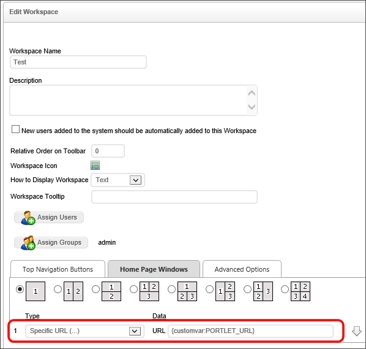

When creating home page portlets in workspaces, it's often helpful to use a particular URL to display in a portlet, using the "Specific URL" setting in the portlet's configuration. For internal URLS, however, the relative paths may change to the URL depending on whether the workspace is on a development server or a production server. You may also want to show different URLs in a portlet based on the user's identity, work center, etc. In cases like these, you need to be able to make the URL dynamic, rather than using a hard-coded URL. Through the use of Custom Variables you can create a variable to store the appropriate URLs you might wish to display, as well as add logic to determine when different URLs should be displayed.
Process Director allows you to set your own system variables in the vars.cs.ascx file. All custom vars that you create are formatted as strings, so you should use string syntax when setting the variable's value, i.e., use double quotes ("") around the value. Process Director will convert custom vars to numbers on the fly if numeric comparisons or calculations are required. Custom vars that you create are stored in a custom dictionary as key/value pairs.
There are two methods available in the custom vars file for creating custom vars: SetSystemVars and PreSetSystemVars. The PreSetSystemVars method is called prior to initializing the Process Director database, while the SetSystemVars method is called after database initialization.
In general, this means that the default method to use when creating custom vars is the PreSetSystemVars method; however, if you need to set the value of the var based on information stored in the database, such as the identity of the user or the workspace in which the user is working, you must use the SetSystemVars method.
The following example shows how to set a simple custom variable to a URL.
public override void PreSetSystemVars(BPLogix.WorkflowDirector.SDK.bp bp)
{
//This creates a new custom var that can be access from anywhere within
//Process Director by using the syntax {CustomVar:PORTLET_URL}
bp.Vars["PORTLET_URL"] = "http://www.myurl.com";
}
You can also add any programming logic you'd like here, to display different URLs under the different conditions you devise.
Using the syntax {CustomVar:MY_VAR} elsewhere in Process Director will return the custom variable (in this case, "MY_VAR") value that was defined in the vars.cs.ascx file.
In the Home Page Windows tab of the Workspace configuration screen, set the Type of the portlet in which you wish to display a URL to "Specific URL". An input box labeled "URL" will appear beside the Type dropdown.
In the URL input box, type the name of the custom variable you created, using the following syntax:
{customvar:PORTLET_URL}
